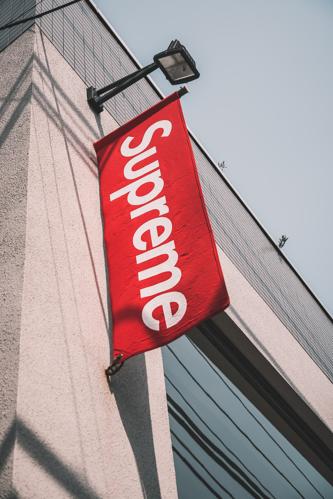

설립자인 제임스 제비아는 미국에서 태어났지만 19살까지 영국에서 보냈다.
슈프림도 영국에 입점해 있고 영국 래퍼 Octavian을 모델로 쓰는 등 영국과도 관련이 깊다.
슈프림은 뭇 스케이터, 힙합퍼, 힙스터, 그냥 스트릿 패셔니스타, 학생에게도 큰 인기를 얻는 브랜드답게 타 의류업체와는 다르게 인기를 실감할 수 있는 점이 여럿 있다.
거의 대부분의 아이템이 발매와 동시에 매진되거나 며칠 안에 매진이 되며 특히 모자나 후드, 티셔츠는 남아나는 일이 없다.
이러한 이유로 발매가가 150달러(한화로 약 18만원)인 가장 인기템 기본 박스 로고 후드 제품의 매물 거래가가 한화로 120만원(!)까지 뛰는 현상이 발생한다.
스웨트 셔츠 재질의 후드 셔츠와 팬츠의 대부분의 제조국은 캐나다로 다른 스트릿 제품들과 달리 퀄리티가 상당히 괜찮은 편이다.
2018년 기준 반팔티는 미국의 '챕터4'라는 공장에서 만들고 있으며, 재질이 우수하다.
또한 핫한 아이템이 나온다는 소문이 있으면 마치 축구계에서 이적 소문이 도는 것처럼 제품 실사의 유출사진, 다음 시즌 컬래버레이션 예상 라인업 따위가 돌아다니기도 한다.
다만 이와같이 너무나도 커진 인기와 리셀러들로 인한 따른 비정상적인 가격 상승으로 인해 해외,
특히 현지인 미국에서는 슈프림이 추구하는 문화를 즐기는 이들 대부분에게는 너무나도 멀어져버려 슈프림,
특히 박스 로고와 같은 희귀하고 리셀가가 높기만 한 제품들만 광적으로 찾는 이들을 부모등골 빼먹는 급식충,
하입비스트 혹은 비싼 것만 좋아하는 중국 갑부 유학생 등으로 비난하며 다른 스케이터 브랜드를 찾는 이들도 늘어가는 추세이다.
진정 슈프림을 사랑하는 사람들은 리셀가가 정가 이하인 제품들도 즐겨 입는다.
초창기 슈프림은 뉴욕의 악동을을 직원으로 채용하며 시작됐다. 그 때문인지 요즘 직원들도 꽤나 불친절하기로 유명하다.
그러나 지분의 50%를 칼라일 그룹에 매각하고 직원들이 친절해졌다는 소리가 들린다.
슈프림에서 일하던 사람들이 NOAH, Awake 등을 설립하면서 슈프림은 우수한 패션 브랜드들을 배출하기도 한다는 평을 듣게 된다.
특히 Awake는 슈프림과 사뭇 다르면서도 적극적인 콜라보레이션을 기획하는 능력은 슈프림과 닮았다.
